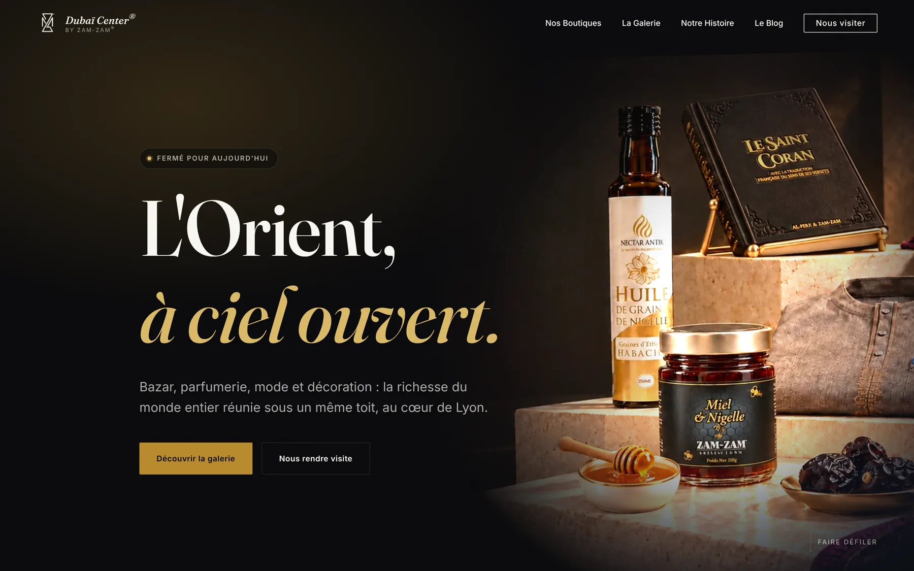
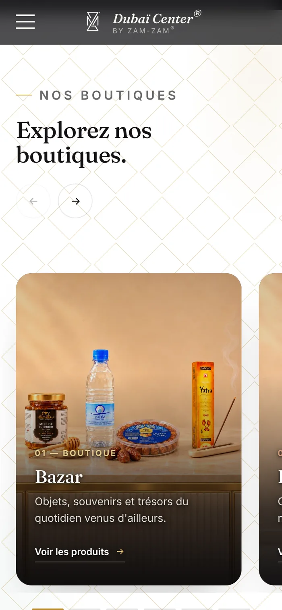
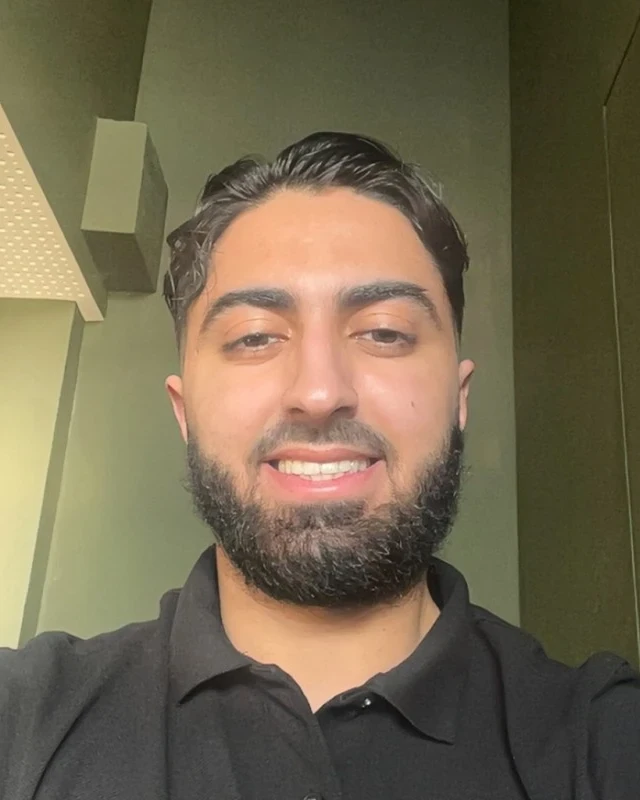
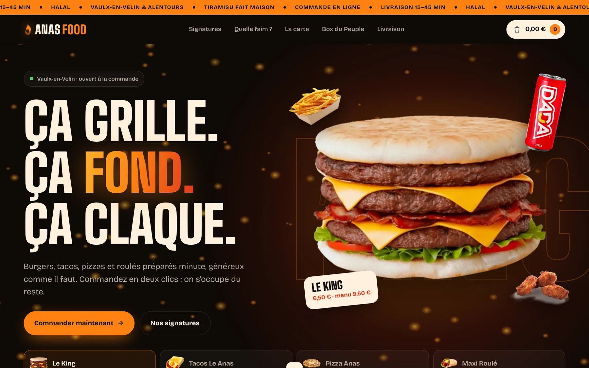
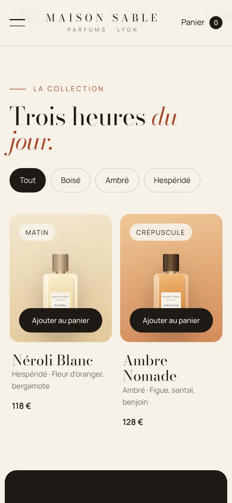

Projet client2022 – 2026
Dubaï Center
Le site d'une galerie marchande orientale de Lyon : 6 boutiques, près de 500 produits, un blog et une présence locale travaillée.
Voir l'étude de cas
Disponible en CDI · Lyon
Chargé de marketing digital & web designer
Je crée des sites et des contenus qui attirent, rassurent et font vendre, du design au code, en passant par le SEO et les réseaux sociaux.

Manifeste
Un site ne devrait pas seulement être beau. Il doit raconter une histoire, guider le regard et donner envie d'agir. Entre design, code et marketing, je crée des expériences web pour les marques qui veulent être remarquées, pas seulement vues.
Projets sélectionnés
Un vrai site client et trois projets personnels, pensés comme des commandes : stratégie, design, code.


Projet client2022 – 2026
Le site d'une galerie marchande orientale de Lyon : 6 boutiques, près de 500 produits, un blog et une présence locale travaillée.
Voir l'étude de cas

Proposition de refonte2026
Un fast-food de Vaulx-en-Velin : carte de 103 produits, panier calculé selon la ville de livraison.
Voir l'étude de cas

Concept2026
Une maison horlogère de luxe : collections en plein écran et animations au défilement.
Voir l'étude de cas


Concept2026
La boutique en ligne d'une parfumerie de niche, de l'identité visuelle au prototype fonctionnel.
Voir l'étude de cas
Expertises
Une présence en ligne qui attire les bons clients et les fait revenir.
Une identité claire et des pages pensées pour convaincre, sur mobile d'abord.
Des sites rapides, soignés et faciles à faire évoluer.
À propos
Fasciné depuis toujours par ces deux mondes, j'en ai fait mon métier : formé au développement (BTS SIO), puis au marketing digital jusqu'au Mastère, je relie ce que l'on construit à ce que l'on vend.
Depuis plus de trois ans, je fais vivre la présence en ligne de Dubaï Center, une galerie marchande lyonnaise : son site, son référencement, son Instagram et sa vente en boutique.
Parcours
Contact